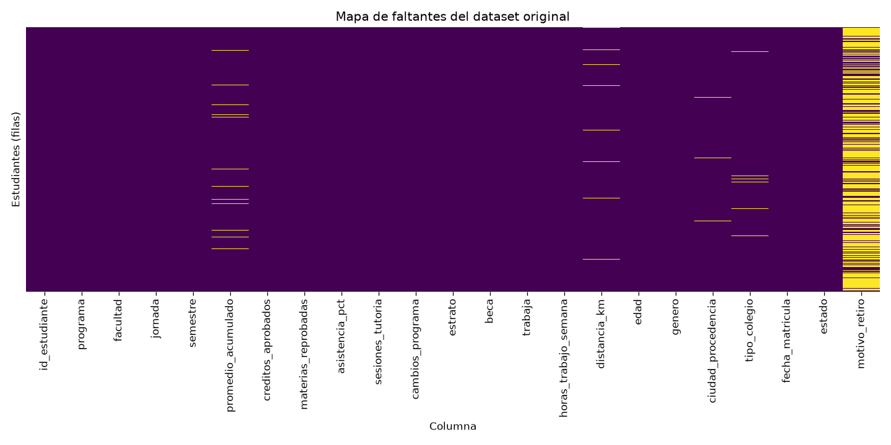
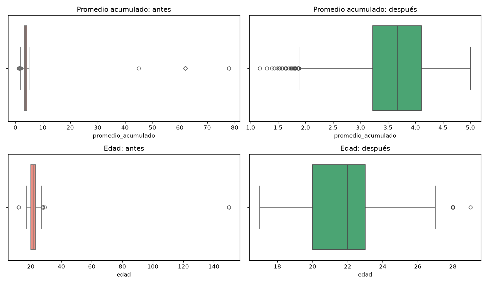
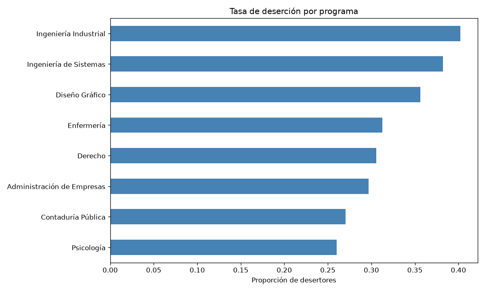
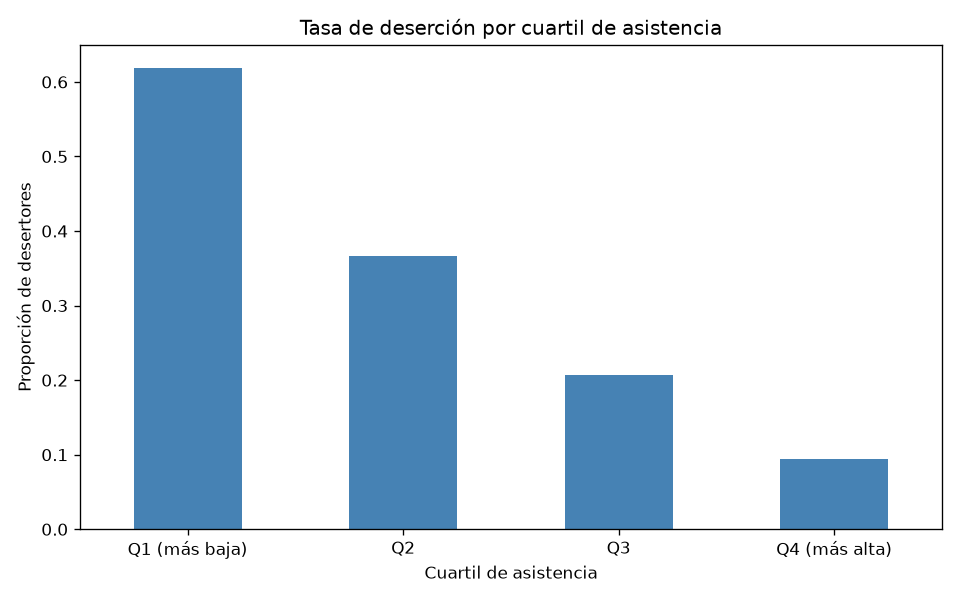

0Diccionario de datos
Las 23 columnas del dataset, con su tipo, su significado y su rol en el análisis.
| Columna | Tipo | Descripción | Rol |
|---|---|---|---|
id_estudiante | Texto | Código único que identifica a cada estudiante. | Identificación |
programa | Categórica | Carrera que cursa el estudiante. | Explicativa |
facultad | Categórica | Facultad a la que pertenece el programa. | Explicativa |
jornada | Categórica | Horario de estudio: diurna, nocturna o fin de semana. | Explicativa |
semestre | Numérica | Semestre que cursa el estudiante. | Explicativa |
promedio_acumulado | Numérica | Nota promedio de la carrera, en escala de 0 a 5. | Explicativa |
creditos_aprobados | Numérica | Créditos académicos aprobados hasta la fecha. | Explicativa |
materias_reprobadas | Numérica | Número de materias perdidas. | Explicativa |
asistencia_pct | Numérica (llega como texto) | Porcentaje de asistencia a clases. Trae símbolos % y guiones. | Explicativa |
sesiones_tutoria | Numérica | Sesiones de tutoría a las que asistió. | Explicativa |
cambios_programa | Numérica | Veces que el estudiante se cambió de carrera. | Explicativa |
estrato | Categórica ordinal | Estrato socioeconómico de la vivienda (1 a 6). | Explicativa (sensible) |
beca | Categórica | Indica si el estudiante recibe una beca (sí o no). | Explicativa |
trabaja | Categórica | Indica si el estudiante trabaja (sí o no). | Explicativa |
horas_trabajo_semana | Numérica (llega como texto) | Horas de trabajo por semana. Trae guiones. | Explicativa |
distancia_km | Numérica | Distancia de la vivienda a la sede, en km. Usa 999 como "sin dato". | Explicativa |
edad | Numérica | Edad del estudiante en años. | Explicativa |
genero | Categórica | Género registrado: femenino o masculino. | Explicativa (sensible) |
ciudad_procedencia | Categórica | Ciudad de origen del estudiante. | Explicativa (sensible) |
tipo_colegio | Categórica | Tipo de colegio de bachillerato: público o privado. | Explicativa |
fecha_matricula | Fecha (llega como texto) | Fecha de matrícula. Mezcla los formatos AAAA-MM-DD y DD/MM/AAAA. | Explicativa |
estado | Categórica | Situación del estudiante: activo, graduado o desertor. | Resultado |
motivo_retiro | Categórica | Razón del retiro; solo existe para los desertores. | Resultado |
1Diagnóstico de calidad
Conteos hechos sobre el dataset original (10.150 filas), antes de corregir nada.
| Tipo de problema | Columna | Filas |
|---|---|---|
| Nulo real | promedio_acumulado | 304 |
| Nulo real | distancia_km | 199 |
| Nulo real | ciudad_procedencia | 103 |
| Nulo real | tipo_colegio | 152 |
| Nulo esperado (no es error) | motivo_retiro | 6.877 |
| Faltante disfrazado ( - ) | asistencia_pct | 202 |
| Faltante disfrazado ( - ) | horas_trabajo_semana | 2.822 |
| Faltante disfrazado (999) | distancia_km | 152 |
| Formato inconsistente (símbolo %) | asistencia_pct | 300 |
| Formato inconsistente (fechas DD/MM/AAAA) | fecha_matricula | 3.052 |
| Duplicado | todas las columnas | 150 |
| Valor imposible (fuera de 15 a 60) | edad | 12 |
| Valor imposible (mayor a 5) | promedio_acumulado | 17 |
| Valor imposible (más de 100 horas) | horas_trabajo_semana | 30 |
Errores tipográficos
programa: Ingenieria de Sistemas y Psicologia, sin tilde.jornada: diurna, nocturna y NOCTURNA con un espacio al final.genero: M, F y femenino.ciudad_procedencia: BOGOTÁ, Bogota, bogota, medellin y Medellin.
Lectura del diagnóstico
El problema que más afecta el análisis es que asistencia_pct y horas_trabajo_semana estén guardadas como texto: así no se puede calcular ninguna tasa ni promedio con ellas. Los 17 promedios entre 45 y 78 están en otra escala e inflarían la media de su grupo.
Los 6.877 nulos de motivo_retiro no son errores: la columna solo aplica a los desertores, y ningún desertor la tiene vacía. Los 2.822 guiones de horas_trabajo_semana son todos de estudiantes que no trabajan, así que significan 0 horas. Las 150 filas duplicadas también repiten el id_estudiante: son el mismo registro cargado dos veces.
2Decisiones de limpieza
Cada decisión quedó registrada con registrar(). Los archivos completos están aparte, en la carpeta Data/processed/:
dataset_limpio.csv no se sube a GitHub (está en el .gitignore); se crea al ejecutar analisis_desercion.py.
| Paso | Columna | Acción | Filas |
|---|---|---|---|
| 3. Números | asistencia_pct | Quitar el símbolo % | 300 |
| 3. Números | asistencia_pct | "-" a nulo y convertir a número | 202 |
| 3. Números | horas_trabajo_semana | "-" a nulo y convertir a número | 2.822 |
| 3. Números | distancia_km | 999 a nulo | 152 |
| 4. Categorías | programa | strip + lower + diccionario de variantes | 260 |
| 4. Categorías | jornada | strip + lower + diccionario de variantes | 485 |
| 4. Categorías | genero | strip + lower + diccionario de variantes | 559 |
| 4. Categorías | ciudad_procedencia | strip + lower + diccionario de variantes | 542 |
| 5. Fechas | fecha_matricula | Convertir DD/MM/AAAA y AAAA-MM-DD a fecha | 3.052 |
| 6. Duplicados | todas | Eliminar filas idénticas | 150 |
| 7. Faltantes | promedio_acumulado | Eliminar filas | 298 |
| 7. Faltantes | ciudad_procedencia | Rellenar con "Sin dato" | 96 |
| 7. Faltantes | tipo_colegio | Rellenar con "Sin dato" | 145 |
| 7. Faltantes | motivo_retiro | Dejar los nulos (son esperados) | 6.562 |
| 7. Faltantes | asistencia_pct | Dejar los nulos | 197 |
| 7. Faltantes | distancia_km | Dejar los nulos | 334 |
| 8. Imposibles | edad | Fuera de 15-60 a la mediana (22) | 12 |
| 8. Imposibles | promedio_acumulado | Mayores a 5 a nulo y eliminar fila | 15 |
| 8. Imposibles | horas_trabajo_semana | Nulo con trabaja = "no" a 0 | 2.703 |
| 8. Imposibles | horas_trabajo_semana | Mayores a 100 a la mediana de quienes trabajan (24) | 29 |
| 9. Variables | desertor | Crear columna True/False | 3.136 |
| 9. Variables | cuartil_asistencia | Crear cuartiles con qcut | 9.490 |
Las decisiones que más pesan
Promedios faltantes e imposibles: se eliminan. Una nota no se puede inventar. Imputar la media acercaría todos los grupos al promedio general y escondería las diferencias que se quieren medir.
Ciudad y tipo de colegio: "Sin dato". Son datos descriptivos; eliminar la fila haría perder al estudiante en las demás preguntas.
Horas de trabajo: 0 para quienes no trabajan. Todos los guiones eran de estudiantes con trabaja = "no".
Asistencia faltante: se deja como nulo. Es la variable de la pregunta 5; imputarla inventaría la relación que se quiere medir.
Gráficos
Las imágenes están en la carpeta Data/processed/graficos/.

Los huecos más visibles están en motivo_retiro, y son esperados. Le siguen promedio_acumulado, distancia_km, tipo_colegio y ciudad_procedencia, que coinciden con los nulos del diagnóstico. El mapa no muestra los faltantes disfrazados (- y 999), porque Pandas no los reconoce como nulos.

Antes de limpiar, los promedios de 45 a 78 y la edad de 150 aplastan las cajas contra el borde. Después, el promedio queda entre 1,17 y 5,00 y la edad entre 17 y 29 años. Los puntos sueltos que quedan son valores posibles, no errores.

Ingeniería Industrial tiene la tasa más alta (40,2 %) y Psicología la más baja (26,0 %).

La deserción baja en cada cuartil: 61,9 % en el de asistencia más baja y 9,4 % en el más alto.
3Las cinco preguntas
Todas las respuestas usan el dataset limpio (9.687 estudiantes) e incluyen el número de estudiantes por grupo.
Pregunta 1. ¿Qué programa presenta la tasa de deserción más alta?
| Programa | Tasa de deserción | Estudiantes |
|---|---|---|
| Ingeniería Industrial | 40,2 % | 1.271 |
| Ingeniería de Sistemas | 38,2 % | 1.386 |
| Diseño Gráfico | 35,6 % | 848 |
| Enfermería | 31,3 % | 1.132 |
| Derecho | 30,5 % | 1.447 |
| Administración de Empresas | 29,7 % | 1.304 |
| Contaduría Pública | 27,0 % | 1.162 |
| Psicología | 26,0 % | 1.137 |
Ingeniería Industrial, con 40,2 % de 1.271 estudiantes, unos 8 puntos por encima del promedio de la institución (32,4 %). La más baja es Psicología, con 26,0 %. Todos los programas tienen más de 800 estudiantes, así que ninguna tasa depende de un grupo pequeño.
Pregunta 2. ¿Hay diferencia en la deserción entre becados y no becados?
| Beca | Tasa de deserción | Estudiantes |
|---|---|---|
| No | 36,4 % | 7.004 |
| Sí | 21,9 % | 2.683 |
Sí: los no becados desertan un 36,4 % y los becados un 21,9 %, una diferencia de 14,5 puntos porcentuales. Pero esa diferencia no prueba que la beca cause la permanencia (ver la reflexión 4).
Pregunta 3. ¿Qué jornada tiene el menor promedio acumulado?
| Jornada | Promedio acumulado | Estudiantes |
|---|---|---|
| Nocturna | 3,46 | 2.666 |
| Fin de semana | 3,70 | 949 |
| Diurna | 3,73 | 6.072 |
La jornada nocturna, con 3,46, frente a 3,73 en la diurna. Fin de semana es el grupo más pequeño (949 estudiantes), pero sigue siendo lo bastante grande para compararlo.
Pregunta 4. ¿Cuántas materias reprobadas tienen en promedio los desertores frente a los activos?
| Estado | Materias reprobadas (promedio) | Estudiantes |
|---|---|---|
| Activo | 0,62 | 5.692 |
| Desertor | 3,07 | 3.136 |
Los desertores reprobaron en promedio 3,07 materias y los activos 0,62, unas 5 veces más. Se excluyó a los 859 graduados porque la pregunta compara a quienes abandonaron con quienes siguen estudiando, y los graduados no pertenecen a ninguno de los dos grupos.
Pregunta 5. ¿La deserción aumenta conforme baja la asistencia?
| Cuartil | Asistencia media | Tasa de deserción | Estudiantes |
|---|---|---|---|
| Q1 (más baja) | 73,9 % | 61,9 % | 2.385 |
| Q2 | 84,4 % | 36,7 % | 2.386 |
| Q3 | 91,3 % | 20,7 % | 2.348 |
| Q4 (más alta) | 98,7 % | 9,4 % | 2.371 |
Sí, de forma constante: entre quienes menos asisten deserta el 61,9 %, y entre quienes más asisten solo el 9,4 %. Aun así no es una prueba de causa: faltar a clase puede ser un síntoma de que el estudiante ya piensa en retirarse, o ambas cosas pueden tener una causa común, como trabajar muchas horas.
197 estudiantes sin dato de asistencia quedan fuera de esta tabla.
4Reflexión: asociación y causalidad
Si la deserción es menor entre los becados, ¿la beca causa la permanencia?
No se puede concluir con estos datos. Los becados desertan menos (21,9 % frente a 36,4 %), pero eso es una asociación. Hay otras explicaciones posibles:
- Selección: muchas becas se dan por mérito académico, así que los becados pudieron tener menos riesgo desde antes de recibirla.
- Variables de confusión: la motivación, el apoyo familiar o la situación económica pueden influir a la vez en conseguir la beca y en permanecer.
- Condición de la beca: si exige mantener un promedio, quien empieza a fallar la pierde y pasa a contarse como no becado.
Para distinguir una causa habría que comparar estudiantes parecidos en todo lo demás, con y sin beca. Lo ideal sería un experimento: sortear becas entre estudiantes que cumplen los mismos requisitos y comparar después la deserción de cada grupo.
5Reflexión: motivo_retiro y la predicción
¿Puede usarse motivo_retiro para predecir la deserción antes de que ocurra?
No. Esa columna solo se llena después de que el estudiante deserta: los 3.136 desertores la tienen llena y todos los activos y graduados la tienen vacía. Un modelo que la use parecería perfecto con los datos históricos, pero sería inútil en la práctica, porque un estudiante activo siempre la tiene vacía. Eso es una fuga de información.
Otras columnas con el mismo problema o un riesgo parecido:
estadoydesertor: son el resultado mismo.creditos_aprobadosysemestre: dependen de cuánto tiempo permaneció el estudiante.materias_reprobadasyasistencia_pct: si se midieron al final, pueden incluir los semestres en que el estudiante ya estaba abandonando.
La regla es usar solo información que la institución conoce en el momento en que quiere predecir.
6Reflexión: uso de variables sensibles
¿Debería la institución usar género, estrato o ciudad para decidir quién recibe apoyo?
No como criterio directo de selección. Estas variables reflejan desigualdades sociales, y usarlas para decidir tiene riesgos:
- Discriminación: se decidiría por algo que el estudiante no eligió, como su estrato o su género, y no por cómo le va en la universidad. Un estudiante de estrato alto con muchas materias perdidas podría quedarse sin apoyo, mientras uno de estrato bajo con excelentes notas lo recibiría sin necesitarlo.
- Estigmatización: etiquetar a un grupo como "de riesgo" puede hacer que profesores y estudiantes esperen menos de ellos, y esa etiqueta termina causando la deserción que se quería evitar.
- Errores individuales: una tasa describe al grupo, no a cada persona. Aunque un grupo deserte más, la mayoría de sus integrantes puede terminar la carrera, y en los grupos "de bajo riesgo" también hay estudiantes que necesitan ayuda y quedarían por fuera.
- Reforzar la desigualdad: si un grupo desertó más en el pasado porque tuvo menos apoyo, usar esos datos para darle aún menos apoyo hace que la desigualdad se repita y crezca.
Es más justo priorizar con señales de comportamiento en las que la institución puede intervenir, como la baja asistencia (61,9 % de deserción en el cuartil más bajo frente a 9,4 % en el más alto) o las materias reprobadas (3,07 en desertores frente a 0,62 en activos). Las variables sensibles sirven para auditar que los apoyos lleguen de forma equitativa a todos los grupos, no para decidir a quién se ayuda.